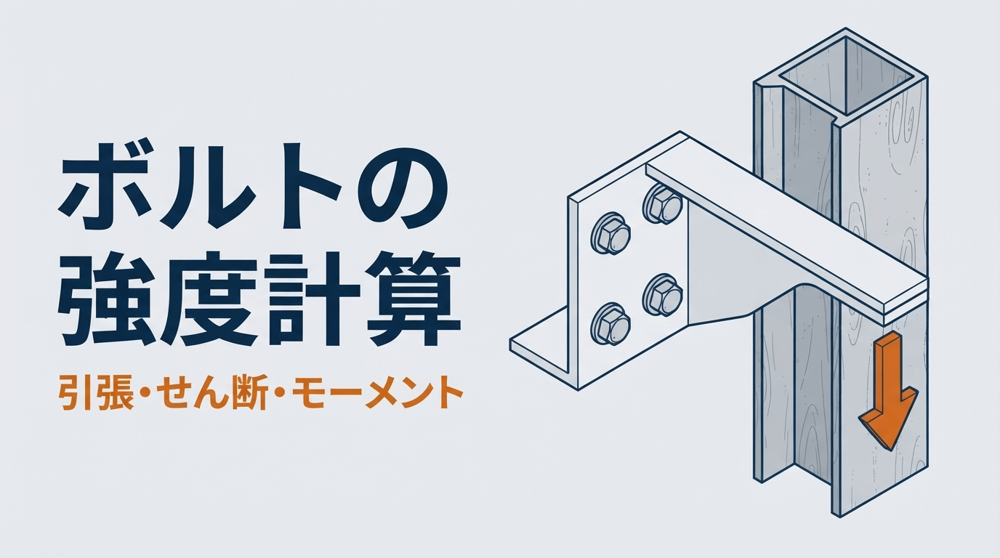

「このブラケット、M8で足りるだろうか」。設備の設計では、ボルトのサイズと本数を決める場面が何度もあります。いつものサイズで済ませることも多いのですが、重い物を吊る、片持ちで支える、といった場面では、ボルトの強度計算で確かめておきたくなります。
本記事では、ボルトの強度計算の方法を、引張・せん断・モーメントの3つの力に分けて解説します。使う値（有効断面積と強度区分）、許容応力の決め方、M6〜M24の許容荷重表を示したあと、設備の設計でいちばん見落としやすいブラケットのボルトを計算例で確かめます。同じ5,000Nの力でも、力のかかる位置が離れるだけで、M8では足りなくなる例です。
計算例の適用範囲
- 本記事は、設備のブラケットや吊り具を留める一般的な鋼製ボルト（並目ねじ）を例に、強度計算の基本的な考え方を説明するものです。計算したボルトの安全性を保証するものではありません
- 許容応力の決め方は、社内基準や客先の指定、適用する規格が優先です。本記事では、よく使われる考え方を例として示します
- 締め付けの力（軸力）の管理、くり返しの力による疲労、建築の高力ボルトの摩擦接合は、本記事の範囲外です
この記事でわかること
- ボルトの強度計算で確かめる3つの力（引張・せん断・モーメント）
- 有効断面積と強度区分の読み方、許容応力の決め方
- 引張・せん断の式と、M6〜M24の許容荷重表
- ブラケットのボルトにかかる力の求め方と、本数より間隔が効く理由
- 板の側の確認と、ボルトの強度計算でよくある失敗
ボルトの強度計算で確かめる3つの力
ボルトにかかる力は、向きによって3つに分けられます。どの力を受けているかで、使う式が変わります。最初に、計算したいボルトがどの力を受けているかを整理します。

引張：軸の向きに引っ張る力
上の梁から物を吊るときのように、ボルトを軸の向きに引っ張る力です。ボルトは、ねじの谷のいちばん細い部分から切れます。そのため、引張の計算では、ボルトの呼び径ではなく、ねじの部分の有効断面積を使います。
せん断：板どうしを横にずらす力
重ねた板どうしが、横にずれようとする力です。ボルトの胴を、はさみで切るような向きに働きます。柱の側面にブラケットを留め、真下に力がかかるときは、まずこの力を受けます。
モーメント：離れた力が、ボルトの群れを回そうとする
ブラケットの先やアームの先に力がかかると、力はボルトの並びを回そうとします。このとき、回転の中心から遠いボルトほど強く引っ張られます。せん断だけを計算して、この引張を見落とすと、ボルトが足りなくなることがあります。本記事の後半で、計算例で確かめます。
この章のまとめ
- ボルトにかかる力は、引張・せん断・モーメントの3つに分けて考える
- 引張は、ねじの部分の有効断面積で計算する
- 離れた位置の力は、ボルトに大きな引張を生む
ボルトの強度計算に使う値｜有効断面積と強度区分
ボルトの強度計算に使う値は、ボルトの太さを表す有効断面積と、材料の強さを表す強度区分の2つです。そこに安全率を掛けて、許容応力を決めます。
有効断面積 As（M6〜M24の並目ねじ）
有効断面積は、ねじの谷を考えた計算上の断面積です。JISの値は次のとおりです。呼び径から求めた円の面積より、2〜3割ほど小さくなります。
| サイズ | M6 | M8 | M10 | M12 | M16 | M20 | M24 |
|---|---|---|---|---|---|---|---|
| 有効断面積 As（mm²） | 20.1 | 36.6 | 58.0 | 84.3 | 157 | 245 | 353 |
強度区分の読み方（4.6・8.8・10.9・12.9、ステンレス）
鋼のボルトの頭には、「8.8」のような強度区分の刻印があります。前の数字に100を掛けると引張強さ、前と後の数字を掛けて10倍すると降伏点または0.2％耐力（呼びの値）になります。8.8なら、引張強さ800MPa、0.2％耐力640MPaです。規格では、4.6は下降伏点、8.8以上は0.2％耐力で示されます。本記事では、両方をまとめて「降伏点」と呼びます。

8.8は、M16を超えるサイズでは、規格の最小値が引張強さ830MPa、0.2％耐力660MPaと少し高くなります（呼びの値は800MPaと640MPaのまま）。本記事では、どのサイズも呼びの値の800MPaと640MPaで計算します。ステンレスのボルトは、A2-70のように表し、規格の最小値は引張強さ700MPa、0.2％耐力450MPaです。A2-70の強さは、鋼の8.8より低いため、さびないからと鋼のボルトから置き換えるときは、計算し直します。
許容応力の決め方｜3つの考え方の比較一覧
許容応力は、材料の強さを安全率で割って決めます。何を基準に、いくつで割るかで、結果が大きく変わります。本記事と計算ツールでは、次の3つを選べるようにしています。
| 考え方 | 4.6 | 8.8 | 向いている場面 |
|---|---|---|---|
| 引張強さ÷3 | 133MPa | 267MPa | 止まっている力（静かな力）。本記事の計算例 |
| 引張強さ÷5 | 80MPa | 160MPa | 動く設備など、くり返しかかる力 |
| 降伏点÷1.5 | 160MPa | 427MPa | 降伏させないことを基準にする例 |
引張強さ÷3と÷5は、機械設計で経験的な目安として紹介されるアンウィンの安全率（鋼で、静かな力に3、片振りのくり返しの力に5とする例）によるものです。規格で一律に決まった値ではなく、引張強さ・降伏点・疲労強度のどれを基準にするかも、力のかかり方や壊れ方で判断します。許容せん断応力は、本シリーズの溶接の記事と同じく、ミーゼスの考え方による簡易計算で、許容引張応力÷√3とします。実際の許容応力は、適用する規準やボルトの種類に従います。どれを使ったかは、計算書に必ず書いておきます。
この章のまとめ
- 使う値は、有効断面積（太さ）と強度区分（材料の強さ）
- 8.8は、引張強さ800MPa・0.2％耐力640MPa。強度区分は刻印で確かめる
- 許容応力の決め方で結果が変わるため、採用した考え方を計算書に書く
ボルトの強度計算の式と計算例
ここからは、引張とせん断の式を、計算例で確かめます。許容応力は、静かな力として引張強さ÷3を使います。
引張の式と計算例1｜設備を上の梁から吊る
1本の引張 T ＝ P ÷ n 引張応力 σ ＝ T ÷ As ≦ 許容引張応力 σa
P：力（N）、n：ボルトの本数、As：有効断面積（mm²）
600kgの設備を、上の梁からボルト4本で吊る例です。力は600×9.81＝5,886N、1本あたり1,472Nです。M6（As＝20.1mm²）なら引張応力は73.2MPaで、強度区分4.6の許容応力133MPaに対して55％です。M8なら40.2MPaで30％になります。吊る物の重心がボルトの中心からずれると、近い側のボルトに力が寄るため、余裕を持たせてサイズを決めます。
せん断の式と計算例2｜ブラケットに真下の力がかかる
1本のせん断 Q ＝ P ÷（n × m） せん断応力 τ ＝ Q ÷ As ≦ 許容せん断応力 τa ＝ σa ÷ √3
m：せん断面の数（1面せん断は1、2面せん断は2）
柱の側面に、ブラケットをボルト4本で留め、真下に5,000Nがかかる例です。1本あたり1,250Nです。M8・強度区分4.6では、せん断応力は34.2MPa、許容せん断応力77.0MPaに対して44％です。ねじの部分がずれる面にかかる場合は、このように有効断面積で計算します。ねじのない胴の部分がかかる場合は、呼び径の円の面積で計算できます。
引張とせん断を一緒に受けるとき
（σ ÷ σa）² ＋（τ ÷ τa）² ≦ 1.0
ブラケットのように、引張とせん断を一緒に受けるボルトは、それぞれの割合を2乗して足し、1.0以下かどうかで見ます。許容せん断応力を許容引張応力÷√3とした場合、この式はミーゼスの考え方による評価（σ²＋3τ²≦σa²）と同じになります。本記事では、この式を簡易な一次評価として使います。締め付けの力、接合面の摩擦、疲労、こじる力は別に確かめます。適用する規準によっては、組み合わせの専用の式が定められている場合があります。
M6〜M24のボルトの許容荷重表（1本あたり）
有効断面積に許容応力を掛けると、1本で受けられる力の目安が出ます。静かな力（引張強さ÷3）の場合です。くり返しの力では、およそ6割になります。
| サイズ | 4.6 引張 | 4.6 せん断 | 8.8 引張 | 8.8 せん断 |
|---|---|---|---|---|
| M6 | 2,680N（約273kg） | 1,547N（約158kg） | 5,360N（約546kg） | 3,095N（約315kg） |
| M8 | 4,880N（約497kg） | 2,817N（約287kg） | 9,760N（約995kg） | 5,635N（約574kg） |
| M10 | 7,733N（約788kg） | 4,465N（約455kg） | 15,467N（約1,577kg） | 8,930N（約910kg） |
| M12 | 11,240N（約1,146kg） | 6,489N（約662kg） | 22,480N（約2,292kg） | 12,979N（約1,323kg） |
| M16 | 20,933N（約2,134kg） | 12,086N（約1,232kg） | 41,867N（約4,268kg） | 24,172N（約2,464kg） |
| M20 | 32,667N（約3,330kg） | 18,860N（約1,923kg） | 65,333N（約6,660kg） | 37,720N（約3,845kg） |
| M24 | 47,067N（約4,798kg） | 27,174N（約2,770kg） | 94,133N（約9,596kg） | 54,348N（約5,540kg） |
この表は、力がボルトの軸の向きか、横の向きに素直にかかる場合の目安です。次の章のブラケットのように、離れた位置に力がかかる場合は、この表だけでは決められません。
この章のまとめ
- 引張は T ÷ As、せん断は Q ÷ As で応力を求め、許容応力と比べる
- 引張とせん断が同時なら、2つの割合の2乗の和で見る
- 許容荷重表は、力が素直にかかる場合の目安として使う
ブラケットのボルトの強度計算｜離れた力を受けるとき
計算例2のブラケットで、力のかかる位置が、柱の面から300mm離れていたらどうなるでしょうか。モーターや部品を、アームの先にのせるような場面です。
回転の中心と、いちばん引っ張られるボルト
離れた力は、ブラケットを下の端まわりに回そうとします。回そうとする力（モーメント）は、力×距離です。このモーメントを、ボルトの引張で受けます。本記事では、ブラケットの下の端を回転の中心とし、ボルトの引張は中心からの距離に比例するとして求める、簡易な方法を使います。この方法は、ブラケットが変形しない、ボルトの伸びやすさがどれも同じ、押し付けられる側は取り付け面が受ける、という仮定にもとづきます。実際の回転の中心は、取り付け面の当たり方で変わるため、構造に合わせて決めます。
モーメント M ＝ P × e いちばん上の段の1本の引張 T ＝ M × ymax ÷ Σ（y²）
e：面から力までの距離、y：回転の中心から各ボルトまでの距離（ボルトの並びの中心からではない）、Σ（y²）：全部のボルトの y² の合計
計算例3｜同じ5,000Nが、300mm離れてかかる
ボルトは横2列×2段の4本、回転の中心から下の段まで20mm、上の段まで120mmとします。モーメントは5,000×300＝1,500,000N·mm、Σ（y²）は2×（20²＋120²）＝29,600mm²です。上の段の1本の引張は、1,500,000×120÷29,600＝6,081Nになります。せん断は、計算例2と同じく1本1,250Nです。
上の段のボルトの引張は、せん断の約4.9倍です。M8・強度区分4.6では、引張応力166.1MPaで許容応力の1.25倍になり、組み合わせの値は1.75で足りません。強度区分8.8なら0.44、M10の4.6なら0.70で足ります。

本数を増やすより、段の間隔を広げる
ボルトを太くする以外の直し方も比べます。4本のまま、上の段を220mmまで離すと、上の段の引張は3,381Nに下がり、組み合わせの値は0.68になります。一方、120mmの範囲に3段（6本）を並べても、引張は4,569Nにしか下がらず、組み合わせは0.96です。モーメントを受けるボルトは、本数を増やすより、回転の中心から離して並べるほうが効きます。ブラケットの背を高くするのが、いちばん効く直し方です。
この計算例で確認していないもの
- 締め付けの力（軸力）と、ブラケットや柱の面がたわんで生じるこじる力
- くり返しの力による疲労と、振動によるゆるみ
- ブラケットの板、溶接、柱の側の強さと、めねじの強さ
この章のまとめ
- 離れた力は、モーメントとしてボルトの引張になる
- 回転の中心から遠いボルトほど、強く引っ張られる
- 本数を増やすより、ボルトの間隔を広げるほうが効く
自分の条件で試す｜ボルトの強度計算ツール（概算）
ここまでの計算を、ご自身の条件に置き換えて試せます。力のかかり方（引張・せん断・ブラケット）を選び、ボルトのサイズと強度区分、本数を入れると、1本あたりの力と、許容応力に対する割合がその場で変わります。同じ強度区分で足りる、いちばん小さいサイズも表示します。初期値は、本記事の計算例3（ブラケット、力の位置300mm）と同じです。
ボルトの強度計算（概算）
本記事と同じ単純化（力は各ボルトに等しく分かれる、ブラケットは変形せず下の端を回転の中心としてボルトの引張を距離に比例して配る、せん断はねじの部分がせん断面にかかるとして有効断面積で計算する、引張とせん断の組合せは（σ/σa）²＋（τ/τa）²で見る）による概算です。締め付けの力（軸力）、こじる力、くり返しの力による疲労、板の支圧、めねじの強さは計算に含みません。結果は設計の可否を保証するものではありません。実際の設計では、適用する基準と専門家の確認にもとづいて判断してください。
力のかかり方
せん断面の数
ボルトの並び（横2列）
ボルト
サイズ（並目ねじ）
強度区分（頭の刻印や製品の仕様で確かめる）
許容応力の決め方
結果
| 許容引張応力 σa ／ 許容せん断応力 τa ＝ σa÷√3 | ／ MPa |
|---|---|
| ブラケットを回そうとする力 M ＝ P × e | N·mm |
| 1本の引張 T（ブラケットは上の段） | N |
| 1本のせん断 Q | N |
| 引張応力 σ ＝ T ÷ As ／ σ÷σa | MPa ／ |
| せん断応力 τ ＝ Q ÷ As ／ τ÷τa | MPa ／ |
| 組合せ（σ/σa）²＋（τ/τa）²（1.0以下が目安） | |
| 同じ強度区分で足りる、いちばん小さいサイズ |
初めての条件や、調べる時間がないときは
図面や寸法などの条件を送っていただければ、ボルトの強度計算から計算書の作成までお引き受けします。客先にそのまま出せる資料にまとめます（オンライン・全国対応）。図面がなくても、寸法と重さが分かれば概算をお返しします。
ボルトの強度計算の後に、板の側も確かめる
ボルトが足りても、留めている板の側が先に壊れることがあります。せん断を受けるボルトでは、穴のまわりの板がボルトに押される力（支圧）と、穴から板の端までの距離を確かめます。
支圧応力 σb ＝ Q ÷（d × t）
d：ボルトの呼び径、t：板の厚さ
計算例2の1本1,250NをM8で受ける場合、板の厚さ3.2mmでは支圧応力は48.8MPa、6mmなら26.0MPaです。この式は、力がボルトの径×板の厚さの面に均等にかかるとした平均の値です。許容の値や耐力の求め方は、適用する規準、板の材料、穴の条件で変わります。また、穴の前の部分が裂ける端抜けや、穴で細くなった断面の破断も、あわせて確かめます。薄い板を留めるときほど、ボルトより板の側が厳しくなります。
穴から板の端までの距離（縁端距離）が短いと、穴の前の部分が裂けるように壊れます。必要な距離は、規準ごとに決まっています。たとえば鉄骨造の継手の告示（平成12年建設省告示第1464号）では、ボルトの径と板の端の仕上げ方で最小の寸法が変わり、径16mmのボルトでは、せん断縁や手動ガス切断の縁で22mm、圧延のままの縁や機械で仕上げた縁で18mmです。一律に「径の何倍」とは決められないため、適用する規準の表で確かめます。
この章のまとめ
- せん断を受けるボルトでは、板の支圧も確かめる
- 薄い板では、ボルトより板の側が厳しくなりやすい
- 端抜けと縁端距離は、適用する規準の表で確かめる
ボルトの強度計算でよくある失敗
呼び径の円の面積で計算する
M8を直径8mmの円として計算すると、面積は50.3mm²で、有効断面積36.6mm²より4割近く大きくなります。ねじの部分で受ける引張は、有効断面積で計算します。
真下の力だけを見て、離れた位置を忘れる
計算例3のとおり、ブラケットやアームでは、せん断より引張のほうが大きくなることがあります。力の向きだけでなく、力のかかる位置を図に書いてから計算します。
強度の計算は足りているのに、ゆるんで折れる
設備の保全の現場で多いのは、振動でボルトがゆるみ、くり返しの力で折れる壊れ方です。静かな力の計算で足りていても、締め付けの管理が欠かせません。決められたトルクで締める、ゆるみ止めを使う、ボルトとナットにまたがる線（合いマーク）を引いて点検で見る、といった手入れを、設計の段階から決めておきます。
締め付けトルクを、強さと混同する
締め付けトルクは、ボルトに軸力を入れるための値で、強さの計算とは別です。トルクと軸力の関係は、T ＝ K × d × 軸力（K：トルク係数）で表されます（JIS B 1083）。K は0.2が代表的な値としてよく使われますが、ねじ面や座面の摩擦、潤滑、表面処理で大きく変わります。締め付けの値は、ボルトや部品のメーカーが示す値に従い、必要なら締め付けの試験で確かめます。
この章のまとめ
- 引張は呼び径ではなく、有効断面積で計算する
- 力のかかる位置を図に書いてから計算する
- ゆるみと疲労は、締め付けの管理と点検で防ぐ
ボルトの強度計算でよくある質問
細いボルトを多く使うのと、太いボルトを少なく使うのは、どちらがよいですか
たとえば、有効断面積の合計は、M8を4本使うと146.4mm²、M12を2本使うと168.6mm²です。力が等しく分かれるなら、太い2本のほうが受けられる力は大きくなります。ただし、ブラケットのようにモーメントを受ける場合は、並べ方で結果が変わります。本数とサイズだけでなく、間隔も合わせて比べます。
頭に数字のないボルトは、何として計算しますか
刻印も製品の仕様も確かめられないボルトは、強度区分を決められません。仮に4.6として計算しても、そのボルトの強さが保証されるわけではありません。力を受ける場所では、仕様書や材料の証明書、購入の記録で強度区分を確かめます。確かめられない場合は、刻印で強度区分が分かるボルトに交換します。
まとめ
ボルトの強度計算は、力を引張・せん断・モーメントに分け、有効断面積と強度区分から求めた許容応力と比べる計算です。M6〜M24の許容荷重表は、力が素直にかかる場合の目安になります。計算例では、同じ5,000Nでも、ブラケットで300mm離れると、M8・強度区分4.6の組み合わせの値は0.44から1.75になりました。
力のかかる位置を図に書き、いちばん引っ張られるボルトを見つけることが、ボルトの強度計算でいちばん大切な一歩です。まずは計算ツールで、ご自身のブラケットの条件を入れて試してみてください。
参考
・JIS B 1051（炭素鋼及び合金鋼製締結用部品の機械的性質）／ISO 898-1（強度区分と機械的性質、有効断面積）
・JIS B 1082（ねじの有効断面積及び座面の負荷面積）
・ISO 3506-1（耐食ステンレス鋼製締結用部品の機械的性質）
・JIS B 1083（ねじの締付け通則：締め付けトルクと軸力の関係）
・平成12年建設省告示第1464号（鉄骨造の継手又は仕口の構造方法：縁端距離）
・アンウィンの安全率（機械設計で経験的な目安として紹介される安全率の表）

この記事を書いた人
株式会社アイツイン 代表 加瀬部 裕紀
製造業に15年在籍し、設備の保全と設計の両方を経験。現場と同じ目線で、計算・設計のお手伝いや、省力化・デジタルツインの導入を支援しています。